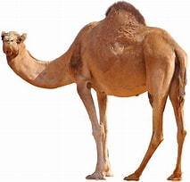
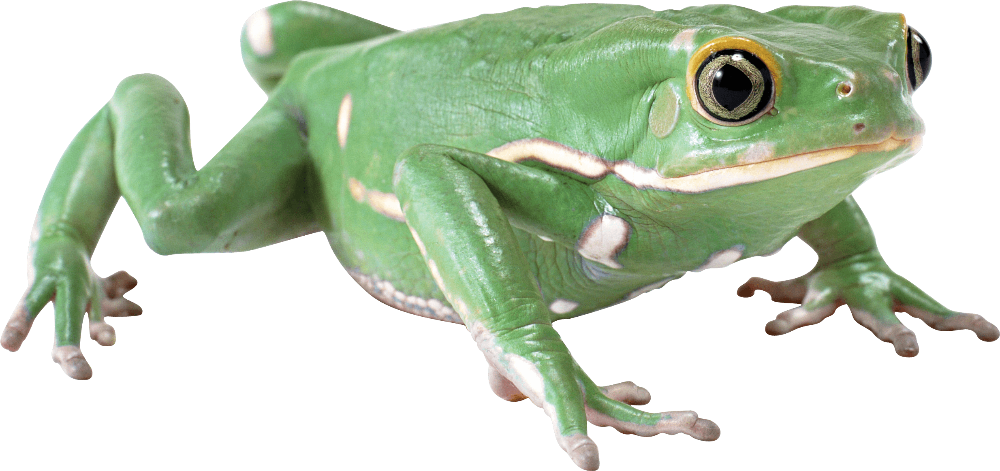
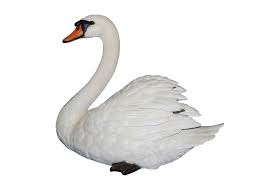

Origami Designs
About Us
Follow Us
Click on the images to know how to make it...

Interesting Facts about Camel
- The humps on a Camel's back store water
- Camel can move easily across the sand because of the way the feet are shaped
- When they find water, they will drink as much as possible.

Interesting Facts about Frogs
- Frogs Eyelids are transparent so they can watch out for predators
- Frogs and toads are almost completely oppisite

Interesting Facts about Swans
- Swans can fly up to 60 miles per hour
- A male swan is called a cob, and a female swan is called a pen.
- Swans are highly intelligent and remember who has been kind to them, or not.